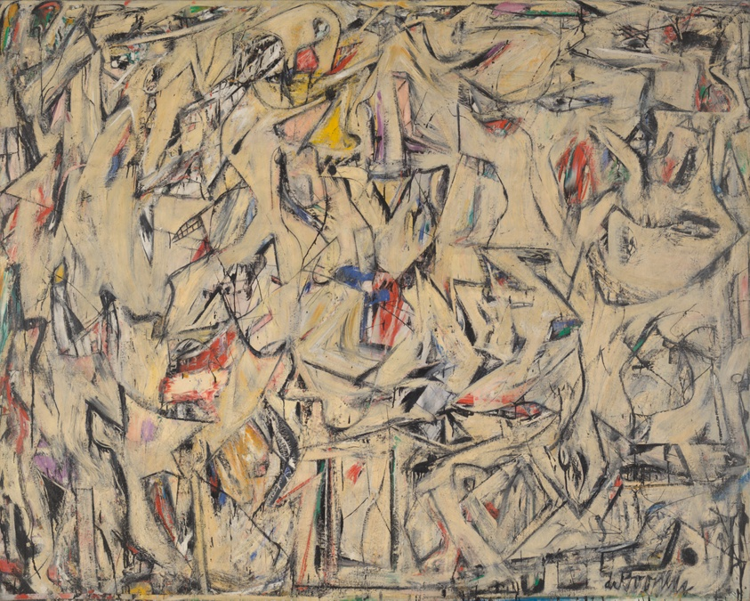
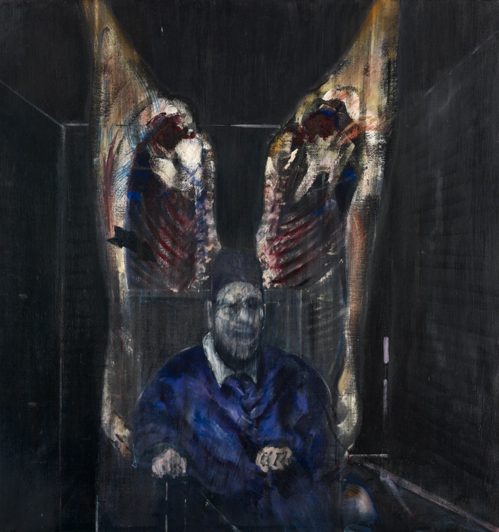
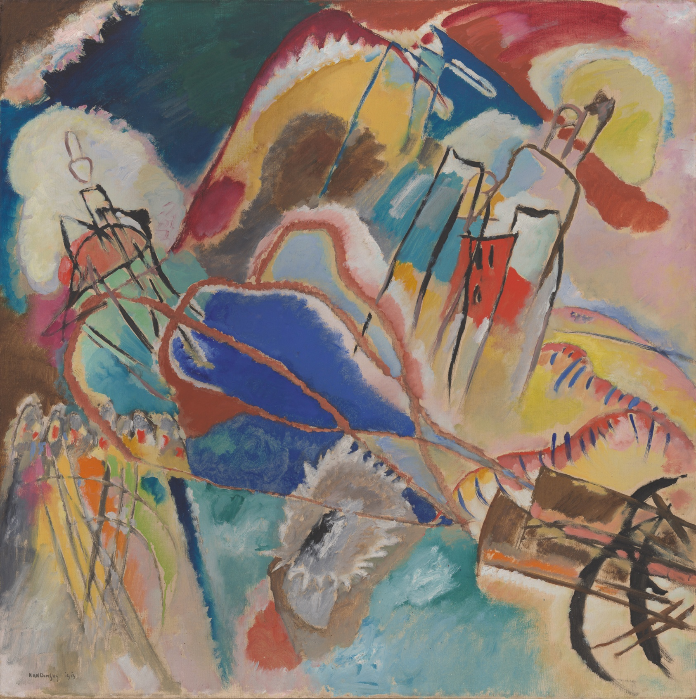
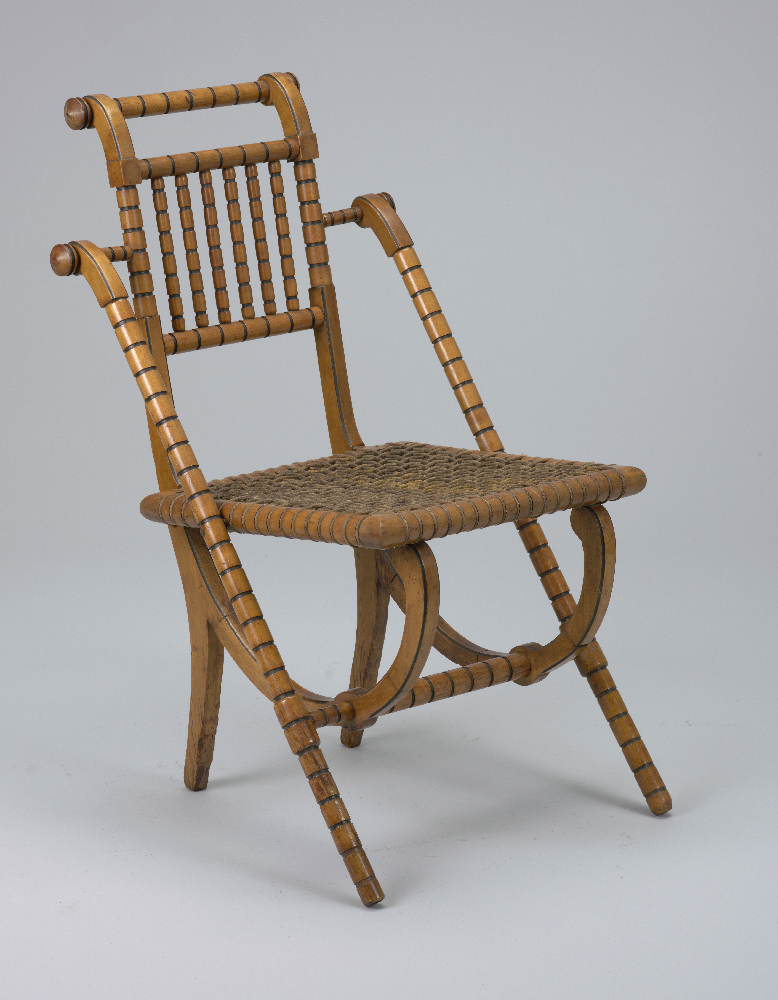
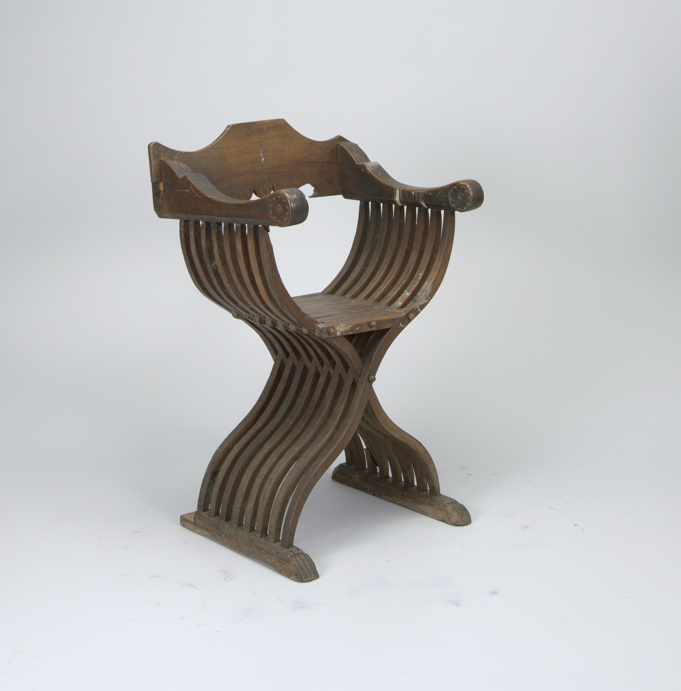
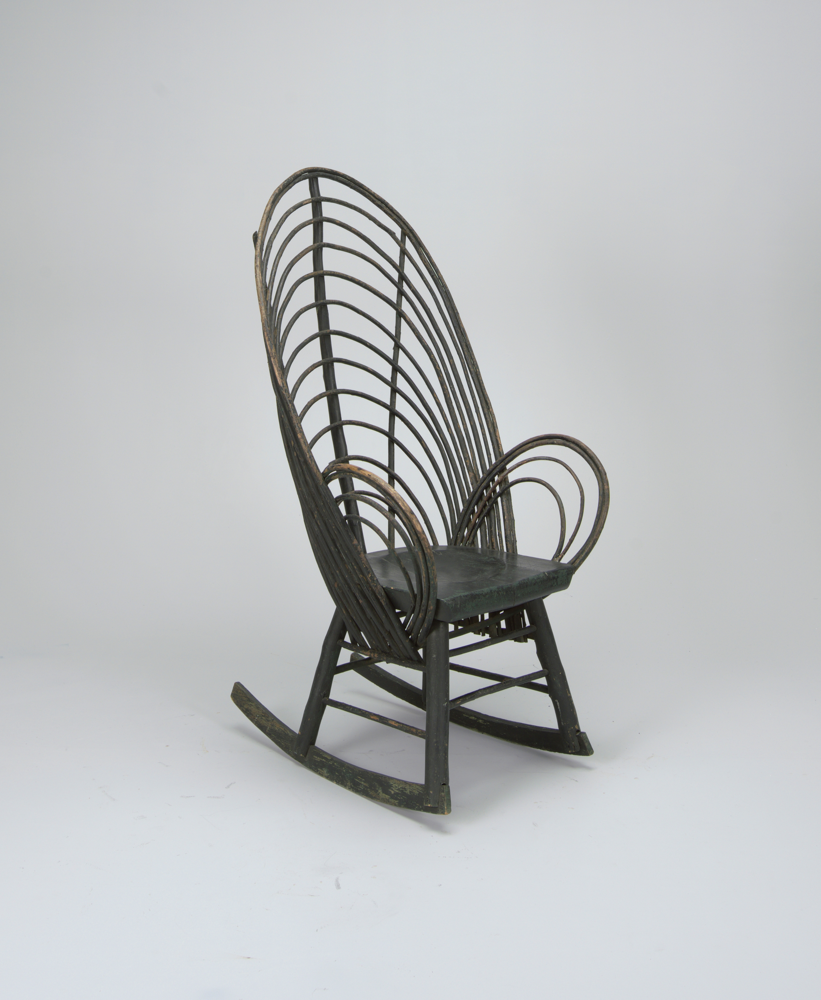
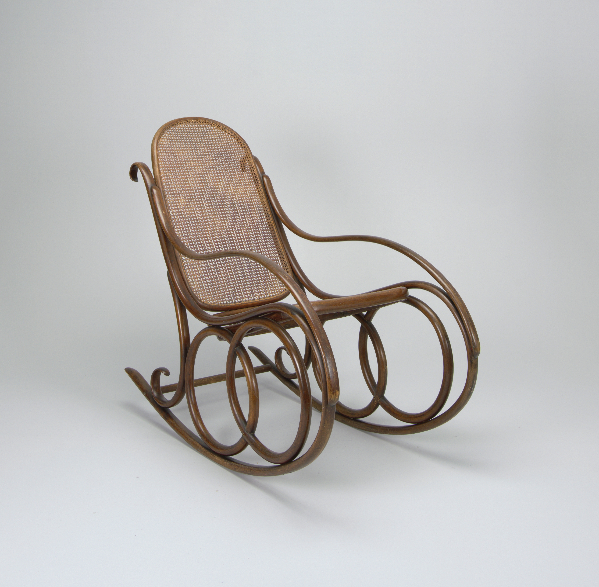

Art Institute of Chicago
Selections from AIC
City Landscape Joan Mitchell, City Landscape, 1955

Excavation Willem de Kooning, Excavation, 1950
Figure with Meat Francis Bacon, Figure with Meat, 1954
Improvisation No. 30 (Cannons) Vassily Kandinsky, Improvisation No. 30 (Cannons), 1913Cooper Hewitt Chairs
From the Smithsonian Collection

George Jakob Hunzinger Chair George Jakob Hunzinger, 1835 – 1898, ca. 1869

Savonarola Chair 16th century, made in Italy
Bentwood Rocking Chair ca. 1900
Gebrüder Thonet Chair Gebrüder Thonet, Austrian, founded 1853, ca. 1860Original Art
Original Art will be added here